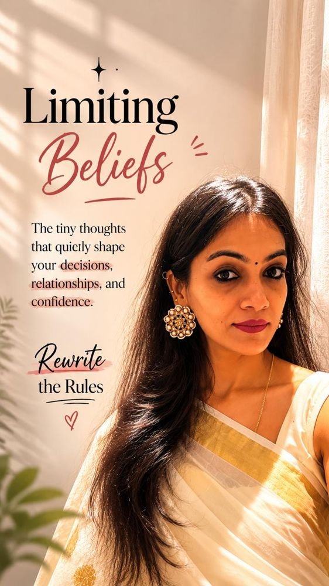

Thoughts & Insights
Rewriting the scripts.
Insights, somatic wisdom, and raw guidance on healing, setting boundaries, and building radical sisterhood on your own terms.
The latest story
How to Start Your Healing Journey: Feminine Mindset Transformations.
Taking the first step toward true inner healing can feel daunting. Discover the foundational mindset shifts that will empower you to embrace your authentic feminine energy.
Every story
Find what you need.
Naming Emotions: The First Step to Reclaiming Your Inner Peace.
Why the simple act of putting a label on what you're feeling can drastically reduce its power over you, and how to start doing it effectively.Read article
Somatic release vs. talk therapy: why your body holds the key to healing.
Why talking about your stress isn't always enough to clear it. Explore how somatic movement bypasses the logical mind to release stored physical trauma and tension.Read article
How to say no without guilt: a guide to setting healthy boundaries for women.
Setting boundaries often triggers a false sense of guilt in women. Learn concrete scripts and psychological reframes to protect your peace without explaining yourself.Read articleRadical sisterhood: why women-only spaces speed up personal growth.
Discarding toxic competition and polite silence. Discover the psychological power of showing up unfiltered in circles of collaboration, raw support, and connection.Read article- Mindset & Boundaries
Unlearning the 'Good Girl' complex in professional spaces.
rewrite the rulesHow to stop over-apologizing and shrinking yourself in the workplace. Strategies to claim your space, voice your opinions, and command respect without guilt.Read article 5 Somatic exercises to instantly regulate a dysregulated nervous system.
Practical, physical tools you can use right now to calm anxiety, release trapped fight-or-flight energy, and bring yourself back to a state of grounded presence.Read article- Sisterhood & Growth
The anatomy of an authentic friendship.
rewrite the rulesMoving past superficial connections. What it takes to cultivate relationships built on absolute honesty, mutual elevation, and unwavering support.Read article - The circleRather talk it through in person?come sit with usEvery one of these stories started as a conversation. The WhatsApp community is where the next local gathering is announced first.Join on WhatsApp
Join the Movement
Experience it in real life.
Ready to discuss these topics in person and connect with other rebels? Join our circle today.
Free to joinWomen onlyRaipur & online